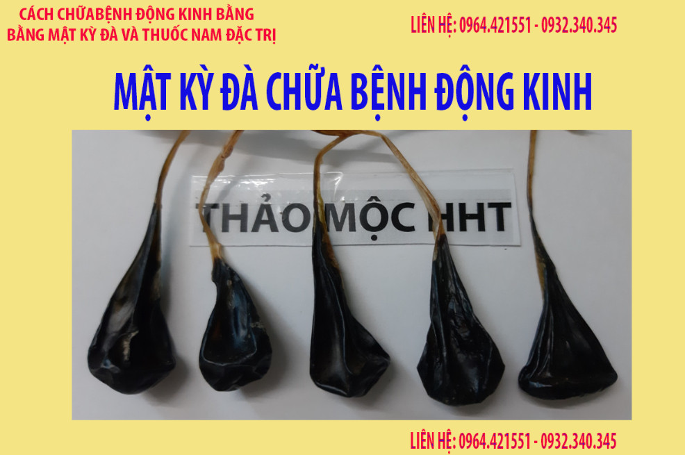
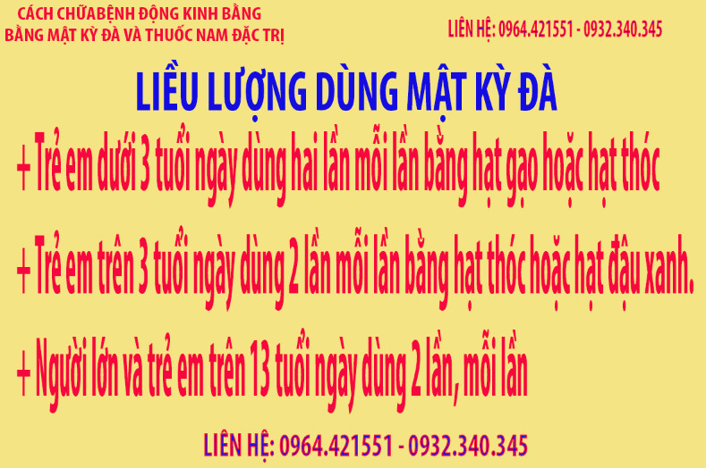

MẬT KỲ ĐÀ CHỮA BỆNH ĐỘNG KINH¶
Bệnh động kinh có nhiều cách chữa như dùng thuốc tây, thuốc nam, thuốc bắc, theo y học cổ truyền và kinh nghiệm của nhân dân thì bệnh động kinh còn dùng mật kỳ đà để chữa. Hôm nay chúng tôi xin giới thiệu cách chữa này để các bạn tham khảo.
1. Cách chia mật kỳ đà.¶
Mật kỳ đà có loại là mật kỳ đà khô và mật kỳ đà tươi, mật kỳ đà tươi, với mật kỳ đà tươi cần để ngăn mát tủ lạnh, khi dùng thì dùng bơm kim tiêm hút ra, mỗi lần dùng tầm 2 đến 3ml mật tươi này.
Mật kỳ đà khô thì cần phải làm mềm mật ra sau đó chia thành những phần bằng hạt thóc đến hạt đậu xanh tùy theo người lớn hay trẻ nhỏ.
Cách làm mềm mật kỳ đà khô, mật kỳ đà ngâm vào chén nước ấm trong 3 phút rồi vớt ra ngoài, để tầm 2 tiếng là mật bắt đầu mềm, nếu mật chưa mềm thì lại làm lại như vậy. Chú ý đừng ngâm quá lâu mật vào nước nó sẽ hút nước và mật sẽ trương lên rất to. Khi chẳng may bị trương lên thì cần treo lên để phơi thì mật sẽ khô lại.
Mật nên chia thành các miếng nhỏ như sau:¶
Dùng cho trẻ nhỏ dưới 3 tuổi thì chia các phần thành hạt gạo đến hạt thóc
Dùng cho trẻ trên 3 tuổi thì chia thành các phần bằng hạt thóc đến hạt đậu xanh.
Dùng cho trẻ trên 13 tuổi và người lớn thì chi thành các phần bằng hạt đậu xanh đến hạt thóc.
Khi chia dùng kéo cắt là được, mục đích chia là không để sử dụng quá nhiều mật.
2. Cách chữa bệnh động kinh bằng mật kỳ đà¶
Đó là cho người bệnh uống mật kỳ đà để chữa bệnh động kinh. Thông thường cho dùng mật liên tục từ 1 đến 2 tháng mà thấy bệnh thuyên giảm thì tiếp tục cho dùng mật kỳ đà đến khi khỏi bệnh.
Khi dùng mật liên tục 2 đến 3 tháng mà không đỡ hoặc giảm không đáng kể thì dùng thêm thuốc thải độc gan, thải độc cơ thể từ hai đến 3 tháng.
Sau khi dùng thuốc thải độc gan, thải độc cơ thể thì dùng thuốc đặc trị kêt hợp với mật kỳ đà. Khi dùng 2 đến 3 tháng mà thấy bệnh thuyên giảm thì điều trị đến khi khỏi.
Bệnh động kinh là một bệnh khó chữa, người bệnh cần phải kiên trì điều trị mới mong có được kết quả tốt. Thông thường tại thảo mộc hht điều trị bệnh động kinh từ 3 đến 6 tháng là có hiệu quả.
4. Liều dùng mật kỳ đà¶
Tùy theo độ tuổi và trọng lượng cơ thể mà liều lượng dùng có thể thay đổi, thông thường thì liều dùng như sau:
Dùng cho trẻ nhỏ dưới 3 tuổi ngày dùng hai lần sáng , tối sau ăn mỗi bằng hạt gạo đến hạt thóc
Dùng cho trẻ trên 3 tuổi ngày dùng hai lần sáng , tối sau ăn mỗi bằng hạt thóc đến hạt đậu xanh
Dùng cho trẻ trên 13 tuổi và người lớn ngày dùng hai lần sáng , tối sau ăn mỗi bằng hạt đậu xanh đến hạt đậu đen.
Lượng mật là tính lượng mật đã làm khô, không tính vỏ mật
Còn mật tươi thì dùng từ 2 đến 3ml cho trẻ nhỏ, trẻ trên 13 tuổi và người lớn thì dùng 3ml đến 5ml.
5. Kiêng kị¶
Người bị bệnh động kinh nên kiêng kỵ các thức ăn cay chua
Kiêng sử dụng chất kích thích như rượu, bia, thuốc lá, các chất kích thích khác.
Không nên ăn các món ăn từ lươn, một số người ăn thì thấy xuất hiện cơn động kinh.
6. Một liệu trình điều trị bệnh động kinh là bao nhiêu.¶
Một tháng dùng mật là 1,5 triệu/tháng
Một tháng dùng thuốc thải độc gan, thải độc cơ thể là 1,5 tr/tháng
Một tháng dùng thuốc đặc trị là 2,5 triệu/tháng
Chi phí cho một tháng vừa dùng mật vừa dùng thuốc là rất tốn kém nên thông thường cho người bệnh động kinh dùng mật kỳ đà trước, nếu không đỡ thì mới dùng đến các loại thuốc khác cho đỡ tốt kém.
7. Liên hệ để lấy thuốc chữa bệnh động kinh.¶
Bạn có thể liên hệ qua số điện thoại hoặc zalo:¶
Liên hệ qua điện thoại, zalo: 0964.421.551 hoặc 0932.340.345
Hoặc đến tại nhà theo địa chỉ¶
Số 23a ngõ 137 đường Bát Khối, Phường Long Biên, Quận Long Biên, Hà Nội.
8. Các bài viết có thể bạn chưa xem:¶
Để biết các thông tin chi tiết hơn về mật kỳ đà mời các bạn xem bài viết tại đây:
Ngoài việc dùng mật kỳ đà chữa bệnh động kinh thì toàn bộ con kỳ đà cũng có tác dụng chữa bệnh động kinh. Mời các bạn xem bài viết tại đây: